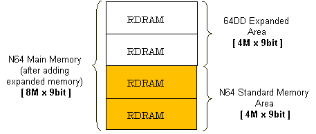

When the 64DD is connected to the N64 Control Deck, the N64's built-in RDRAM is extended by the memory expansion pak that comes with the 64DD system. This doubles the conventional 4M x 9bit of main memory so that 8M x 9-bit of memory can be used as main memory.
When creating 64DD applications, this expanded memory area can be allocated for frame buffers and Z buffers in the same way as the standard N64 memory.

Nintendo® Confidential
Copyright © 1999
Nintendo of America Inc. All Rights Reserved
Nintendo and N64 are registered trademarks of Nintendo
Last Updated March, 1999